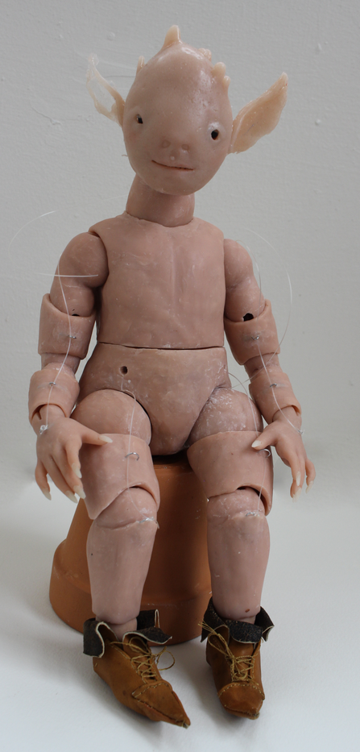

Handmade Animatronic
I talk about this project in my Artist’s talk at Art && Code : Homemade
A figure that can be animated through a set of pulleys - intended to be an animatronic, can be set up as such with strong enough motors when body is held in place (the current mechanics have to much resistance for arduino scale motors, which is what I have, so currently more of a puppet). It is a modified ball-jointed-doll with movable arms (joints in the wrist, double joints in the shoulder and elbow), legs (joints at the ankle, knee, and hip), neck, and waist (rotational only). An opening in the back allows for access to internal elastic (elastic chords string all parts together) and pulleys, which move limps and facial features. The mouth opens and closes, and eyes can blink; head can also tilts and look in different directions due to the neck joint. Also has a handmade outfit and small leather shoes
Big thank you to The STUDIO for Creative Inquiry! this project was suported by and made during my residency ❤️
Click HERE for in depth documentation (video and high res photos, may take while to load)
